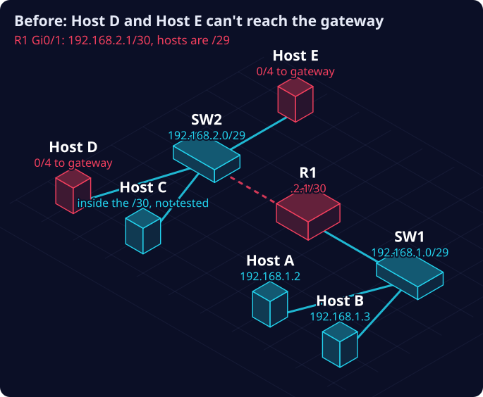
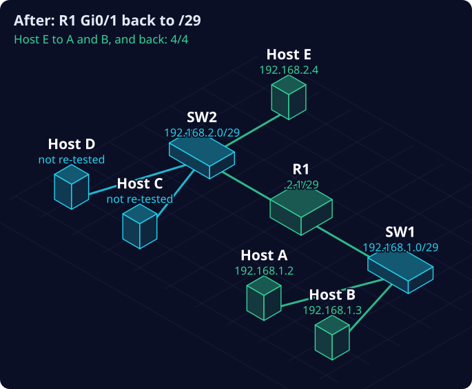

The Right Address, the Wrong Mask: when every check says fine
A check that only looks at the address will pass a broken network. The record has to hold what the summary leaves out.
What happened
This is a training lab, on a simulated network. It is not client work. The lab is Troubleshooting Fundamentals, Phase 1.6 from Witty Networks. The diagrams below are my own.
Two small networks (subnets), joined by router R1. The top one has Hosts C, D and E on switch SW2. The bottom one has Hosts A and B on switch SW1. The ticket: Host E can’t reach Hosts A and B.
The lab’s diagram showed every address. It didn’t show a single mask: the number that decides which addresses count as “on the same network”. That’s where the fault was.

Before. R1’s top interface had a /30 mask while the computers used /29. Host D and Host E were cut off.The technician’s view
Start at the complaint. Host E’s settings were complete: 192.168.2.4, a /29 mask, gateway 192.168.2.1. They were also consistent: .4 and .1 sit in the same /29 range. But Host E couldn’t reach its own gateway: 0 of 4 replies.
The split test. Was it Host E’s side, or the gateway’s side? I tested from Host D, on the same subnet with the same gateway, and predicted first: if Host D gets through, the fault is Host E’s switch port. Host D failed too. Then I checked Host D’s own settings, because a comparison only counts once the comparison host is proven good. They were fine. Two good computers failing pointed at the shared path to the gateway.
Everything looked fine. The switch showed every port on the path connected and on the same network (VLAN 20). The router’s summary view, sh ip int brief, showed its top interface with the right address, 192.168.2.1, and “up/up”. Every check passed, and the pings still failed. That summary view shows the address. It never shows the mask.
The mask. The detail view, sh ip int g0/1, showed 192.168.2.1/30. A /30 covers only .0 to .3. To the router, Host D’s .3 was the broadcast address of its own network, and Host E’s .4 was on no network it knew. The address was right. The mask made it wrong.
The fix, proven. Reviewed before typing: set the interface to 192.168.2.1 with mask 255.255.255.248 (/29). The router confirmed the new mask and logged the change. Host E then reached Hosts A and B, 4 of 4 each, and both reached Host E back. I saved the router’s configuration so it survives a restart, and the lab’s checker passed.

After. R1 back to /29. Hosts D and C were not re-tested.What I didn’t check. The ticket named only Host E, but Host D was cut off too. By the math, Host C (.2) sat inside the /30 and probably kept working. I didn’t re-test Host D or Host C after the fix. That’s a gap, and it’s in the findings below.
Where this happens for real
An illustration of the same fault in a real setting. It is not a real incident.
Picture a bank branch. Teller workstations sit on one subnet, and a router connects them to head office, where the account systems live. During routine maintenance, someone retypes the router’s settings and gets one number wrong: the mask.
Most teller stations go dark. One keeps working, because its address happens to fall inside the smaller range. The first complaint comes from one teller, so the ticket says one workstation is broken. Every dashboard shows the router up and the address correct. Customers queue while the team hunts in the wrong place, and the one working station makes it look like a local fault.
The architect’s view
From here on I’m asking: what if this were a real network?
The router interface had the right address with the wrong prefix length, and every summary view reported it healthy. Nothing recorded each interface’s intended mask, and nothing checked the live settings against it. A check that compared addresses alone would have passed this fault.
| # | Finding | Pillar | Lifecycle | Lesson |
|---|---|---|---|---|
| 1 | The router interface had a /30 mask against a /29 design; Host D and Host E were cut off | Metadata | Operate | Reality wins; the record is the finding |
| 2 | Summary views showed healthy; the mask was only in the detail view | Assurance | Operate | Configured is not controlled |
| 3 | The ticket named one computer; the fault reached further, and two computers weren’t re-tested | Assurance | Maintain | Verify the class, not the ticket |
| 4 | The split test relied on a comparison computer; it only counts once that computer is proven good | Assurance | Maintain | Triangulation over trust |
| 5 | The same “who is my gateway” setting is what an attacker abuses with ARP cache poisoning (MITRE ATT&CK T1557.002) | Legal & Access | Operate | Detection pairs with prevention |
The control
AAR-1: Address Authority and Reconciliation, extended to router interfaces. What it requires:
- The address register holds every interface’s intended address and prefix length, router interfaces included.
- An interface is not in service until its live address and prefix match its register entry.
- A scheduled scan compares live interface settings with the register. Any difference is a logged finding.
- The scan is proven able to fail: a planted mismatch, such as a /30 on a test interface, must be flagged before the scan’s “all clean” result is trusted.
- Every gateway entry names the real router interface. Switch protection (Dynamic ARP Inspection) blocks a fake gateway, and the same scan detects one.
How to prove it works
In this lab: settings on Hosts E and D; gateway pings from both; port status on the switch; the router’s summary and detail views; the change; the detail view again; pings in both directions; saving the configuration; then the lab’s checker.
On a real network: a scheduled scan against the register, with a planted-mismatch test each cycle and every finding closed under change control. Requirement 4 is the one most often missing. A scan that has only ever reported “clean” proves nothing. I applied the same idea to my own network fixer: its gate test is checked by deliberately breaking the gate and confirming the test fails.
Takeaway
| On the network | In asset governance |
|---|---|
| The address | The asset’s name in the register |
| The mask (prefix length) | The asset’s scope: what it considers its own |
sh ip int brief and “up/up” |
A dashboard that reports green |
| The detail view | Inspecting the asset itself |
| A planted mismatch in the scan | Testing that the control can catch what it claims to catch |
A technical fix restored one interface. A register that records scope, and a scan proven able to fail, solves the class of failure.
Audit trail
- Checked by me and by the lab’s automated checker. No independent reviewer, so self-verification is a stated limit.
- This was a coached run. Two coach prompts shaped it: to verify Host D before trusting it, and to save the router’s configuration.
- An earlier version of this write-up said the fault cut off the whole top subnet. That was wrong for Host C, and it was corrected before publishing.
- Open: Hosts D and C not re-tested after the fix. AAR-1 is proposed, not built.